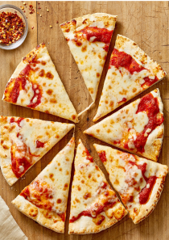
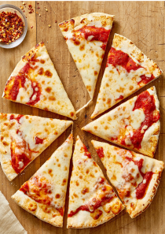

El Sushi
Fecha:10/08/2019
El origen del sushi es realmente interesante, y hoy hablaremos de él. Es cierto que este tipo de cocina es uno de los más característicos de la gastronomía japonesa, al igual que es muy popular en el extranjero. Japón es una isla rodeada de aguas muy ricas en plancton, por lo que disfrutan de una excelente variedad de pescados y mariscos, lo cual ayuda a la excelencia del sushi. Pero originariamente el sushi no es de Japón.
Entonces ¿Dónde y cuándo nace el sushi? Según los datos que tenemos, la historia del sushi se remonta al siglo II d.C. en China. Empieza como un método de conservación, donde se cocía el arroz y el pescado y se dejaban fermentar por un tiempo. Al principio sólo se comía el pescado.
Sushi es una palabra de origen japonés y es la unión de dos palabras: Su= Vinagre y Shi-Meshi= Arroz, por lo que sushi se podría traducir como Arroz Avinagrado.